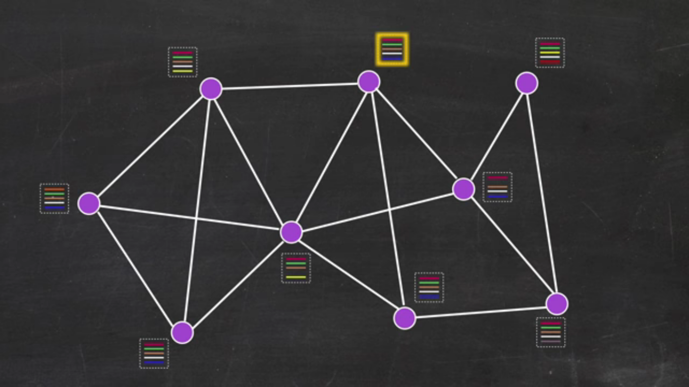
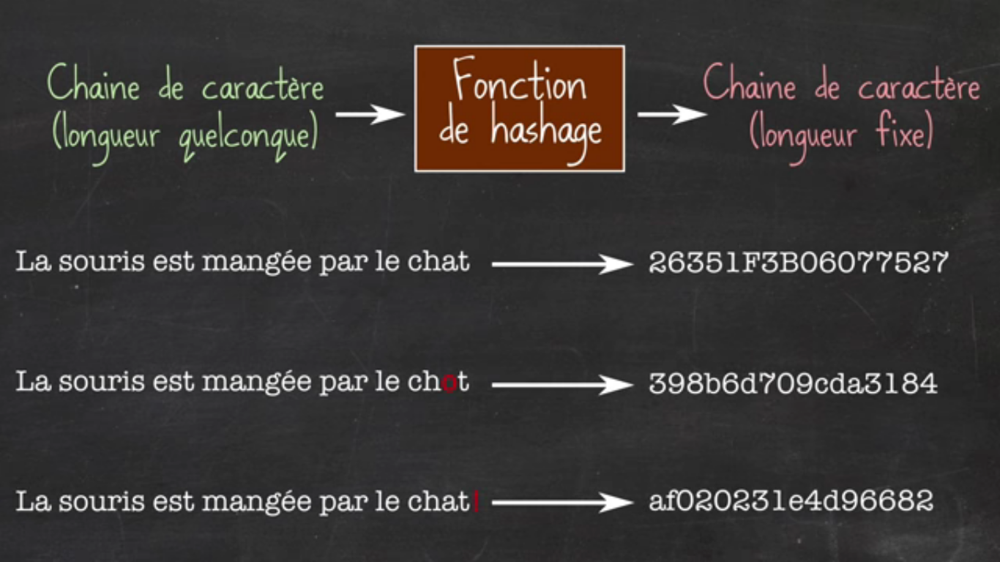
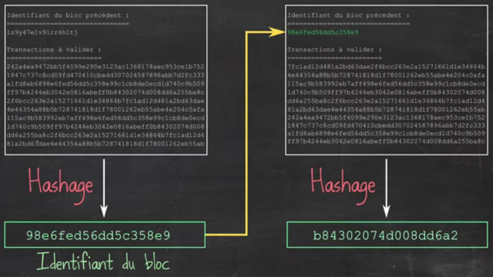
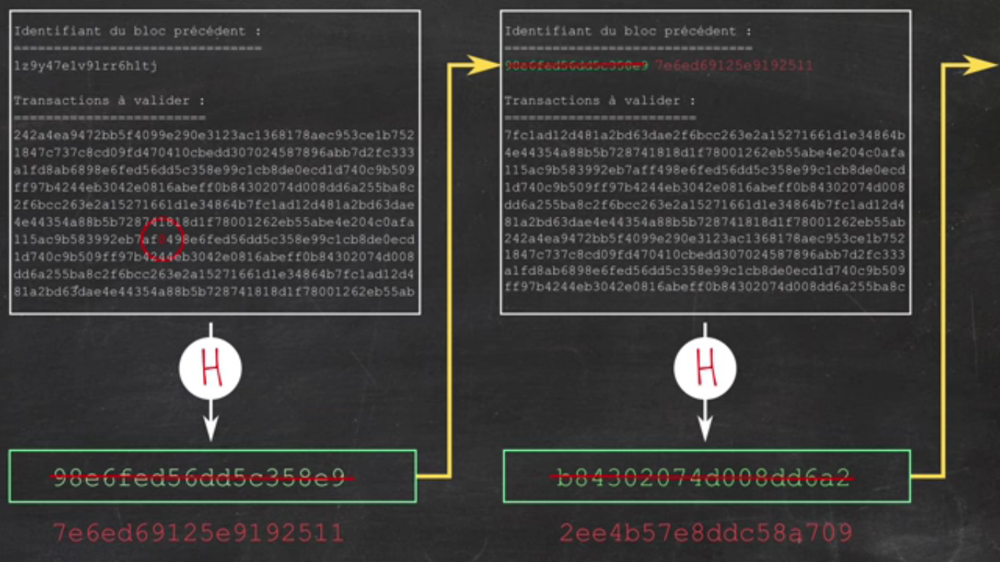
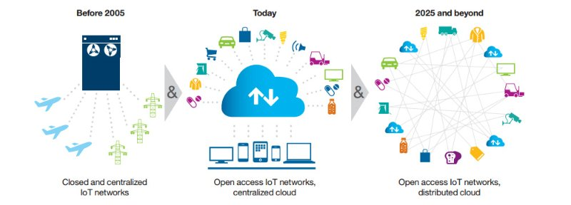

Introduction
Les nouvelles technologies ont permis aux individus de communiquer et de s'organiser entre eux directement sans passer par un intermédiare mais lorsqu'un échange implique un transfert de valeur nous avons besoin d'un tiers de confiance , il faut passer par une banque pour transmettre de l'argent ou par un notaire pour céder une propriété . La supervision d'un tiers de confiance n'est pourtant pas sans risque ce qui explique que nous perdions peu à peu confiance dans nos institutions.
Aujourd'hui la blokchain offre une alternative innovante au schéma actuel en promettant de résoudre les problèmes intrinséques du fonctionnement des tiers de confiance.Ce concept est né avec la monnaie éflectronique Bitcoin et son inventeur un certain Satoshi Nakamoto (qui peut être une personne ou un groupe de personnes). Depuis ce temps là, certains specialistes la considère comme la deuxième révolution aprés l'internet. Mais une question qui se pose qu'est ce que la blockchain ?
Définition du concept
C'est un système informatique permettant de décrire de manière indélébile une transaction entre deux parties.C'est un registre transparent que chacun peut consulter mais sans jamais pouvoir modifier les entrées précédentes.Par extension, une blockchain constitue une base de données qui contient l’historique de tous les échanges effectués entre ses utilisateurs depuis sa création. Cette base de données est sécurisée et distribuée : elle est partagée par ses différents utilisateurs, sans intermédiaire, ce qui permet à chacun de vérifier la validité de la chaîne.
Ce registre est constitué de blocs qui contiennent des centaines de transactions qu'ils s'ajoutent les uns aux autres formant ainsi une chaîne d'où le terme blockchain.Les transactions peuvent être de nature très différente : Il est possible d'enregistrer un échange d'actifs , un vote ou encore un contrat numérique .

Principe de fonctionnement d'une blockchain
Pour assurer ce processus des individus ou des entreprises appelés mineurs mettent à disposition la puissance de clacul de leurs ordinateurs pour effectuer les calculs nécessaires au fonctionnement d'une blockchain.Cette puissance de calcul permet de vérifier la validité de toutes les transactions enregistrées dans une blockchain . Ces mineurs sont rémunérés en crypto-monnaie en échange de leurs puissances de calcul . En assurant la fiabilité de réseau les miliers de mineurs permettent à la blokchain de créer la confiance entre deux parties sans recourir à un tiers .
On va expliquer d'une manière simple l'idée de la blockchain en se basant sur le Bitcoin puisque le concepet de la blockchain a pris naissance avec cette monnaie éléctronique.
Tout d'abord un point trés important est que la blokchain est un système décentralisée càd la base de données de toutes les transactions n'est pas gérée par une instance centrale comme une banque mais elle est partagée dans un immense réseau peer to peer .D’où tous les utilisateurs connectés au réseau peuvent héberger une copie de la base de données qui contiennent toutes les transactions.
 Schéma simplifié du système peer-to-peer de la blockchain
Schéma simplifié du système peer-to-peer de la blockchain
Imaginons un cas de transfert de Bitcoin entre deux personnes.Une personne A veut donner deux Bitcoins à une personne B , alors la personne A inscrit dans sa copie de la base de données cette transaction et ainsi toutes les copies du réseau se communiquent pour passer le message .Mais quand on voie ce message de transfert de Bitcoin , comment peut on être certain de son auteur ?
Pour résoudre ce problème d'authentification on utilise la cryptographie asymétrique.

Chiffrage asymétrique : c'est le fait qu'on chiffre le message avec une clé et on le déchiffre avec une autre clé .
On parle donc de l'existance de deux clés :une publique que tous le monde peut obtenir et une privée que seule la personne conçernée possède.
En fait la personne A chiffre avec sa clé privé le message de la transaction "Moi personne A je donne 2 Bitcoins à la personne B" et inscrit ce msg chiffré dans la base de données et les autres personnes peuvent déchiffrer le message avec la clé publique et comme ça on est sur que cette personne a inscrit cette transaction puisque c'est le seul qui a pu la chiffrer de cette façon.

Shéma montrant que la clé privée doit être secrète et que tout le monde possède la clé publique .
Maintenant un autre problème c'est qu'on a plein de copies de la base de données ce qui pose des soucies sur la manière dont ces copies se communiquent . Ce problème devient clair notamment dans le cas d'une tentative de déclaration d'une transaction deux fois dans le réseau dans des places différentes. Alors comment le système de la blockchain gère ça ?
En fait chaque noeud du réseau enregistre les nouvelles transactions dans une liste en attente . Alors les noeuds possèdent des listes en attente différentes les unes des autres .A chaque 10 minutes un noeud prende sa liste en attente et la déclare validée et les autres noeuds se synchronisent avec ce noeud . Ainsi chaque 10 minutes on a une liste ,qui s'appelle un bloc, qui sera validé d'ou le nom blockchain ou chaine de blocs.
Un noeud trouve son identifiant et déclare son bloc validé
Mais comment est élu le noeud qui va valider son bloc ? En fait chaque noeud essaye de trouver un identifiant de son bloc et ceci à travers une fonction de hashage qui prend en entrée un fichier contenant l'identifiant du bloc précédant , la liste des transactions et un nombre qui s'appelle nonce (ajouté pour des raisons de sécurité ) pour fabriquer ainsi avec une fonction de hashage son identifiant et cet identifiant va servir pour calculer l'identifiant du bloc suivant .
Principe de hashage
Récapitulons donc!Chaque 10 minutes,les noeuds (qui sont les mineurs) vont essayer de trouver leurs identifiants et celui qui résoud le problème le premier sera élu et donc tout le monde le suit et un nouveu bloc se crée.
L'intêret de ce système est de protéger la base de données de toute modification , si on change une transaction ceci modifie le hashage et donc l'identifiant du bloc ce qui implique de modifier l'identifiant du bloc suivant aussi et ainsi de suite.Donc ça devient extêmement difficile de modifier une transaction dans le passé.
Shéma montrant le rôle du hashage dans la construction de la chaine des blocs.
Impacts de la modification d'un bloc sur toute la chaîne de blocs
Comme on a dit auparavant , pour réaliser cette opération de validation, les mineurs utilisent des machines onéreuses et énergivores . Pour cette raison ils sont rémunérés en conséquence par exemple aujourd'hui un mineur gagne 12,5 Bitcoins par bloc .On peut remarquer que c'est bénéfique pour les mineurs puisqu'ils gagnent de l'argent mais il est bénéfique aussi pour les autres utilisateurs.Comment ça ?
Dans le cas d'un système classique ou on a un intermidiaire ,plus vous transférez de l'argent plus l'intermédiaire prend une grande commision . Cependant dans le cas de blockchain cela ne coûte que quelques centimes puisque les mineurs prennent de l'argent en fonction du nombre de blocs quelque soit le nombre de transactions dans le bloc et quelque soit les montants qui existent.
Applications possibles de la blockchain
Au-delà des protocoles bancaires, la technologie blockchain pourrait être appliquée dans différents domaines sur la conjonction de trois concepts : le fonctionnement grâce à un réseau P2P, des données publiques et anonymes ainsi qu’un fonctionnement décentralisé et sécurisé.
Evidemment il existe des idées qui restent loin de la réalité mais ça n'empêche pas que beaucoup d'aplications concrêtes apparaîssent . Voici des exemples :
- Des situations ou on veut afficher des informations publiquement mais de manière infalsifiable . Par exemple , vote en ligne ou notariat
- Ubériser Uber, blouser BlaBlaCar et berner Airbnb : Le point commun des ces platformes c'est qu'il diffusent une information et obtiennent une commission pour cela .Avec la blockchain plus besoin de ces intermédiaires.Le projet Arcade City , un "Uber-killer", en est le meilleur exemple. A sa tête ? Un ancien chauffeur Uber, Christopher David. Son application décentralisée veut connecter chauffeurs et utilisateurs en peer-to-peer. Ce ne serait donc pas Arcade City qui fixerait les prix : chauffeurs et utilisateurs se mettront d'accord en fonction de l'offre et de la demande. Et Christopher David n'est pas le seul à vouloir s'attaquer aux géants de l'économie du partage à grands coups de blockchains. La'Zooz compte bien rivaliser avec Blablacar, et le fondateur de Slock.it, Stephan Tual, espère "remplacer Airbnb".
- Factom (Smart Contract) :Factom propose d’utiliser la Blockchain afin de certifier : L’existence de documents ,l’évolution des différentes versions d’un même document,les modifications apportées à un document dans le temps
- Le marché de l'énergie locale désintermédié :Le réseau électrique actuel repose sur une logique unidirectionnelle, du producteur vers le consommateur. Le problème, c'est qu'avec le développement de l'auto-production, certains consommateurs équipés de panneaux solaires deviennent des producteurs. Comment les relier au réseau ? C'est tout le défi de smart grids, dont l'intelligence permettrait d'assurer l'équilibre entre l'offre et la demande. Expérimentés en local, ces smart grids pourraient prendre une toute autre dimension avec la technologie blockchain. Le SolarCoin – une monnaie virtuelle – peut ainsi permettre d'effectuer des transactions d'électricité entre particuliers. Leur objectif, à terme, "est de parvenir à un véritable marché de l'énergie locale désintermédié, où offre et demande seuls fixeront les prix". Un projet similaire a vu le jour à Brooklyn au début de l'année. TransActive Grid combine énergie renouvelable et économie du partage. Grâce à son "microgrid", cinq maisons de President Street peuvent échanger de l'énergie en temps réel, sans intermédiaire, avec cinq autre habitations… de l'autre côté de la rue !
- IOT : sécuriser les données 